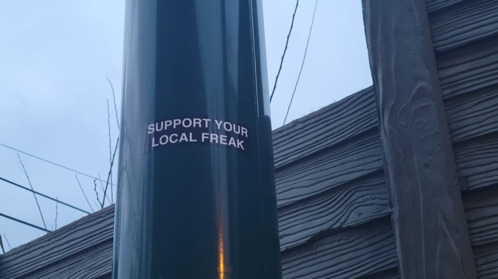
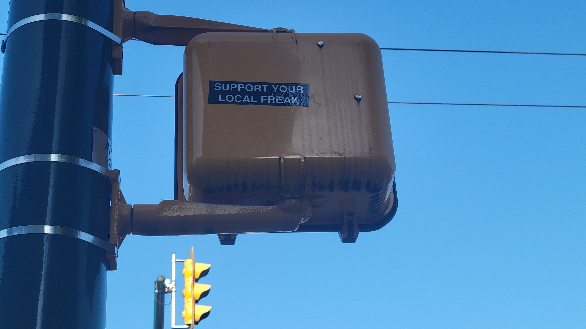
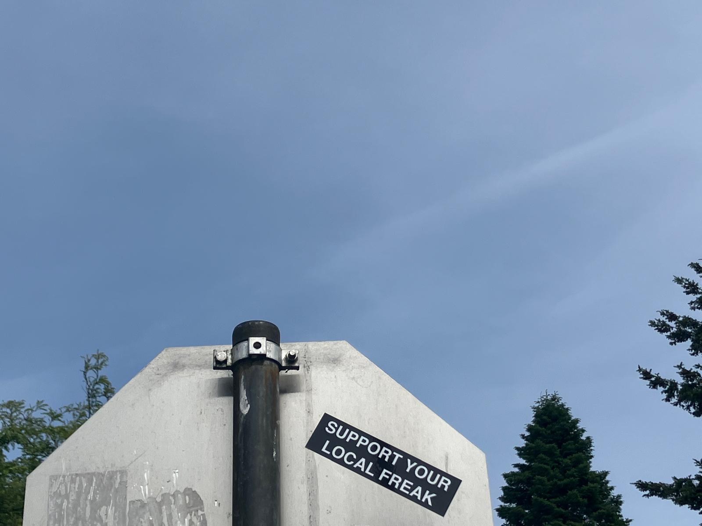
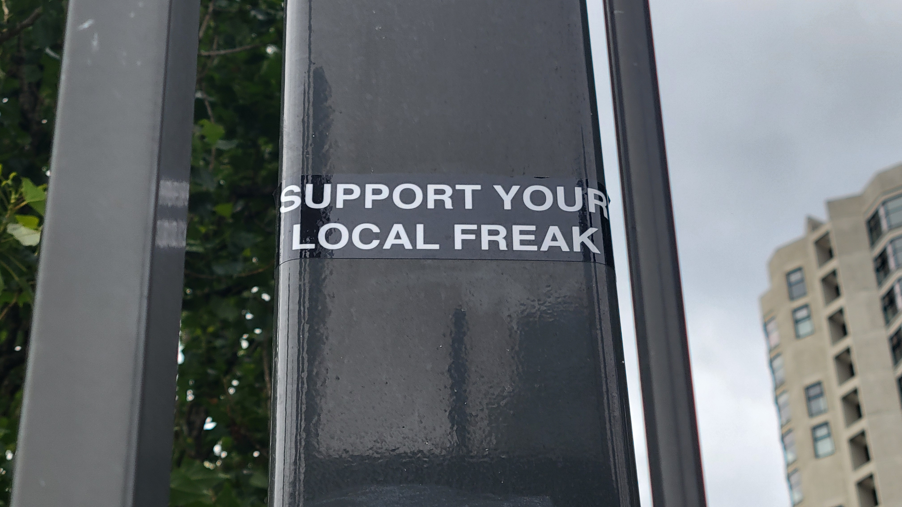

<html>

<head>

    <title>Drift</title>
    <meta charset="utf-8" />
    <meta name="viewport" content="width=device-width, initial-scale=1.0">

    <!-- Source for your Leaflet JavaScript and CSS -->
    <link rel="stylesheet" href="https://unpkg.com/leaflet@1.9.4/dist/leaflet.css"
        integrity="sha256-p4NxAoJBhIIN+hmNHrzRCf9tD/miZyoHS5obTRR9BMY=" crossorigin="" />
    <!-- Make sure you put this AFTER Leaflet's CSS -->
    <script src="https://unpkg.com/leaflet@1.9.4/dist/leaflet.js"
        integrity="sha256-20nQCchB9co0qIjJZRGuk2/Z9VM+kNiyxNV1lvTlZBo=" crossorigin=""></script>

    <!--datasets here - geojson wrapped as .js variables -->
    <script src="" charset="utf-8"></script>


</head>

<body>

    <!--remember the map id as it will be referenced later on when we create the map variable-->
    <div id="mapid" style="height: 100%;"></div>

    <script>


        // when creating layer groups, we will  add the map variable and basemaps later on instead of right away like usual. 

    
        //adding images to popups when the popups are in groups is a bit different than usual. first we create variables for the contents of the popups, then we create the variables for the markers that will comprise the layer. these markers will reference the variables set up initially to populate their contents. this took a lot of tinkering to work out. 

        var freak1a = "<br>Support your local freak, siting 1";

        var freak2a = "<br>Support your local freak, siting 2";

        var freak3a = "<br>Support your local freak, siting 3";

        var freak4a = "<br>Support your local freak, siting 4";


        var driftOptions =
        {
            'maxWidth': '400',
            'className': 'custom'
        }


        var freak1 = L.marker([49.26334456427557, -123.15274344647867]).bindPopup(freak1a, driftOptions);
        var freak2 = L.marker([49.273023137020054, -123.05674442018812]).bindPopup(freak2a, driftOptions);
        var freak3 = L.marker([49.26727495168035, -123.15277269590939]).bindPopup(freak3a, driftOptions);
        var freak4 = L.marker([49.27636412437746, -123.13459525995853]).bindPopup(freak4a, driftOptions);


        //here we create a layer group of them
        var freaks = L.layerGroup([freak1, freak2, freak3, freak4]);


        //now we add the basemaps 
        var osm = L.tileLayer('https://tile.openstreetmap.org/{z}/{x}/{y}.png', {
            maxZoom: 19,
            attribution: '© OpenStreetMap'
        });

        var Stadia_AlidadeSmooth = L.tileLayer('https://tiles.stadiamaps.com/tiles/alidade_smooth/{z}/{x}/{y}{r}.{ext}', {
            minZoom: 0,
            maxZoom: 20,
            attribution: '&copy; <a href="https://www.stadiamaps.com/" target="_blank">Stadia Maps</a> &copy; <a href="https://openmaptiles.org/" target="_blank">OpenMapTiles</a> &copy; <a href="https://www.openstreetmap.org/copyright">OpenStreetMap</a> contributors',
            ext: 'png'
        });

        var OpenStreetMap_BZH = L.tileLayer('https://tile.openstreetmap.bzh/br/{z}/{x}/{y}.png', {
            attribution: 'Map Tiles By <a href="https://www.openstreetmap.org/copyright">OpenStreetMap</a> contributors, Tiles courtesy of <a href="http://www.openstreetmap.bzh/" target="_blank">Breton OpenStreetMap Team</a>',
            subdomains: 'abcd',
            minZoom: 0,
            maxZoom: 20,
            ext: 'png',
            scrollWheelZoom: false,
        });


        //now we make a map variable and reference the id, and include the layers we will define momentarily. whatever basemap variable is referenced in the layers will be the one that's visible on initial map load.
        var mymap = L.map('mapid', {
            center: [49.276492587652065, -123.1274420575647],
            zoom: 12,
            layers: [OpenStreetMap_BZH, freaks]
        });

        //now lets add a variable to contain the various basemaps added
        var baseMaps = {
            "OpenStreetMap": osm,
            "Greyscale": Stadia_AlidadeSmooth,
            "OpenStreetMap BZH": OpenStreetMap_BZH,
        };


        //now lets add a variable to contain any and all overlay layers. include all layer groups created
        var driftMaps = {
            "Support your local freak": freaks
        };


        //now lets add a control to the map so we can see and toggle the layers
        var layerControl = L.control.layers(baseMaps, driftMaps).addTo(mymap);


    </script>


</body>

</html>